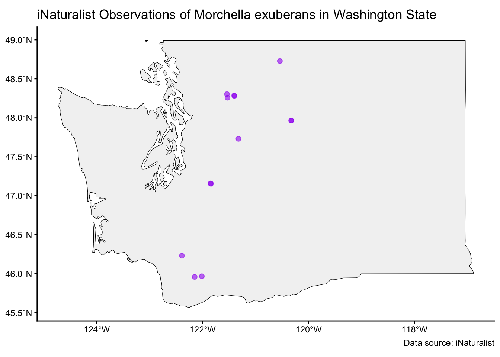
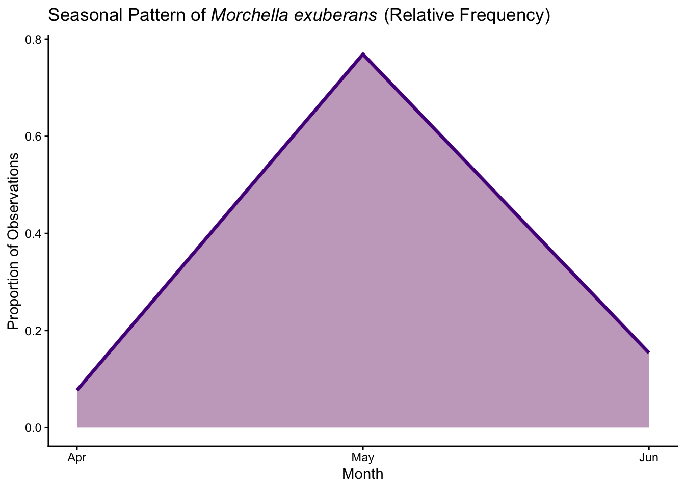

Higher Classification (Kingdom / Phylum / Class / Order / Family): Fungi / Ascomycota / Pezizomycetes / Pezizales / Morchellaceae
2. Morphology & Identification
Fruiting Body Description: around 5 cm tall, conical cap, brown cap and cream colored stalk, ridges on cap
Cap / Pileus Characteristics: Conical shape with brown color. Mature specimens are dark brown-black. Younger specimens are brown-to-tan. Full of ridges and pits (honeycomb appearance). Pits are elongated vertically. Attached to the stipe via a shallow sinus. Because of the burn-site substrate and charred environment, specimens may carry fire residue on the surface.
Stipe / Stem / Attachment / Ring / Volva / Base: Hollow like the cap, but one of the diagnostic features of M. exuberance is that the stem is often chambered or layered, especially near the base. Key distinguishing trait. Surface may show shallow longitudinal grooves or fluting, especially near the base. Stipe is typically white to pale colored, especially toward the top; near the base it may become slightly darker or show brownish or ashy discoloration from its substrate. Somewhat firm, the presence of internal chambering may make the stipe appear somewhat segmented when layered or cut vertically.
Spore Print Color: Generally, true morels produce a cream to pale yellow spore deposit.
Microscopic Features (if available): (spore size & shape, cystidia, etc.) Morphologically plastic, many Morchella species look similar. One key diagnostic trait are the capitate acroparaphyses on the sterile ridges of the cap have club-shaped tips. The spores are ellipsoid, hyaline, and smooth/faintly ornamented. They have 8-spored asci typical of ascomycetes. They have septate hyphae.
Other Diagnostic Characters: (odor, bruising reactions, latex, color change, etc.) Burn site habitat is a strong ecological clue. Cap ridges darkening with pits that are elongated vertically, brown to tan. Cap attached to stipe by a shallow sinus. tipe often showing chambered or layered internal structure. A key microscopic clue are capitate acroparaphyses on sterile ridges.
Similar Species / Potential Confusions:Morchella eximia – uniformly hollow, walls thinner Morchella sextelata – hollow, but stipe tends to be longer and more fragile Morchella tomentosa – Thick stipe tissue, not evenly hollow, often cotton-like when young Morchella importuna – hollow, but fruit in mulch, not burns.
3. Distribution & Habitat in Washington
Range (counties or regions): Western North America is the core range for post-fire fruiting.
Geographic Distribution in WA: Encountered in the first spring (sometimes second) after wildfires, especially in conifer burn sites east of the cascades. This pattern is consistent with western North American post-fire black morels.
Elevation Range: Reported in montane conifer forests, including high-elevation zones in the season after fire.
Habitat Types / Substrate Preferences: (forest type, soil, leaf litter, dead wood, etc.)
Recently burned conifer forests (especially Douglas fir, true firs, spruce, pine systems) with moderate burn severity bands often proving most productive. These patterns are robust across PNW studies and align with species-level treatments that restrict M. exuberans to conifer burn sites. Fruiting typically peaks during the first post-fire spring, sometimes persisting into a second spring depending on the moisture and temperature as well as the landscape or severity of the burn.
Host Associations (if applicable): Prophilous and conifer-associated at fruiting.
# 1. Get records by taxon_id (Morchella exuberans = 735321)mexuberans_data <-get_inat_obs(taxon_id =735321, maxresults =10000)# 2. Convert to sf objectmexuberans_sf <- mexuberans_data %>%filter(!is.na(latitude), !is.na(longitude)) %>%st_as_sf(coords =c("longitude", "latitude"), crs =4326)# 3. Get WA state polygonwa_state <-ne_states(country ="United States of America", returnclass ="sf") %>%filter(name =="Washington") %>%st_transform(st_crs(mexuberans_sf))# 4. Keep points inside WAmexuberans_wa <- mexuberans_sf[st_within(mexuberans_sf, wa_state, sparse =FALSE), ]# 5. Plotggplot() +geom_sf(data = wa_state, fill ="gray95", color ="black") +geom_sf(data = mexuberans_wa, color ="purple", alpha =0.6, size =2) +labs(title ="iNaturalist Observations of Morchella exuberans in Washington State",caption ="Data source: iNaturalist" ) +theme_classic()

4. Seasonality & Phenology
Months of Fruiting in WA: Spring
Seasonal Notes: Fire dependent. Usually found first or second spring following a fire. They are a pheonicoid fungi meaning they fruits in response to heat. Too much heat will burn the mycelium, but too little heat will not trigger the fungi to fruit.

There were no sightings outside of these three months from iNaturalist.
Substrate / Decomposition Role: Prefer slightly acidic pH in soil. Decaying matter that has been burned.
Interactions: Plays a large role in nutrient cycling following fires.
Environmental Sensitivity / Indicators: Fire and high heat causes them to form fruiting bodies. They could remain dormant in soil for over 50 years before fire causes them to bloom.
6. Conservation, Abundance & Threats
Abundance / Rarity in WA: They are very abundant in Eastern Washington following fires. Their relationship to fire is very predictable and consistent.
Conservation Status (state, federal, red list):Morchella exuberans is not classified as endangered or threatened.
Threats / Pressures: Fire suppression could potentially limit productivity of Morchella exuberans.
Management or Monitoring Notes: They are heavily foraged which should be considered in management.
7. Use / Ethnobiology / Toxicology
Edibility / Toxicity: Edible after proper cooking.
Traditional / Cultural Uses: Used in traditional medicine for treating asthma, indigestion, and excessive phlegm. Morchella exuberans is considered a delicacy in many cultures.
Medicinal / Bioactive Compounds: It is intended for cultivation purposes and is not meant to treat/cure diseases.
Cautions / Warnings: Non-true morels are hard to distinguish and can contain monomethyl hydrazine (MMH) which is highly toxic. Be sure to cook properly before consuming.
8. References / Further Reading
Key Literature Sources:
DOI: 10.1080/00275514.2017.1408294
Description: Fruiting body of Morchella Exuberans; Photo credit: Bonnevaux (Doubs - France) 29/04/2001
Description: Underside of Morels; Photo credit: Ron Pastorino from Mushroom Observer
Habitat Photo:
: NA
10. Other Notes & Observations
Field Notes / Observations: Very similar looking to other morels. Can be mistaken with toxic non-true morells.
Questions / Uncertainties: Questions about whether or not they are saprotrophic or just mycorrhizal.
Fun facts: Often referred to as a green/pickle morel!
Citation List:
Miller, A. N., Raudabaugh, D. B., Iturriaga, T., Matheny, P. B., Petersen, R. H., Hughes, K. W., Gube, M., Powers, R. A., James, T. Y., & O’Donnell, K. (2017). First report of the post-fire morel Morchella exuberans in eastern North America. Mycologia, 109(5), 710–714. https://doi.org/10.1080/00275514.2017.1408294
Du, X.-H., Zhao, Q., & Yang, Z. L. (2015). [Rev. of review on research advances, issues, and perspectives of morels]. Mycology, 6(2), 78–85. https://doi.org/10.1080/21501203.2015.1016561
Kuo, M. (n.d.). The Morchellaceae: True Morels and Verpas MushroomExpert.com Richard, F., Bellanger, J.-M., Clowez, P., Hansen, K., O’Donnell, K., Urban, A., Sauve, M., Courtecuisse, R., & Moreau, P.-A. (2015). True morels (Morchella, Pezizales) of Europe and North America: evolutionary relationships inferred from multilocus data and a unified taxonomy. Mycologia, 107(2), 359–382. https://doi.org/10.3852/14-166
Pacific Northwest Research Station, & Pilz, D. (2007). Ecology and management of morels harvested from the forests of western North America. U.S. Dept. of Agriculture, Forest Service, Pacific Northwest Research Station. http://catalog.hathitrust.org/api/volumes/oclc/132839428.html McFARLANE, E. M., PILZ, D., & WEBER, N. S. (2005). High-elevation gray morels and other Morchella species harvested as non-timber forest products in Idaho and Montana. Mycologist, 19(2), 62–68. https://doi.org/10.1017/S0269915X0500203X .
Kuo, M., Dewsbury, D. R., O’Donnell, K., Carter, M. C., Rehner, S. A., Moore, J. D., Moncalvo, J.-M., Canfield, S. A., Stephenson, S. L., Methven, A. S., & Volk, T. J. (2012). Taxonomic revision of true morels (Morchella) in Canada and the United States. Mycologia, 104(5), 1159–1177. https://doi.org/10.3852/11-375
Furlong, K. “Burn Morels: A Phoenix Rises”. Science Story. Retrieved October 27, 2025, from https://sciencestory.uoregon.edu/life-in-a-changing-landscape/land/burn-morels
Morel Mushrooms: A fascinating study - foraged - foraged. Foraged. https://www.foraged.com/blog/the-ecology-of-morel-mushrooms-a-fascinating-study
)
)